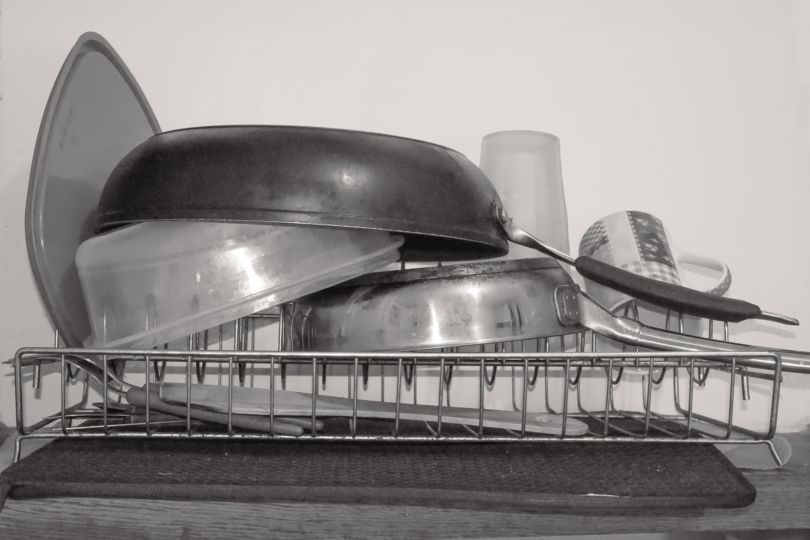

Species of dishes
Photographic archive and collection
The newpaper gathers around a hundred photographs of drying dishes. The aim of this collection is to raise public awareness of our relationship with everyday objects. There is a sense of repetition, habit, and banality that we can also feel in our everyday spaces. My bachelor’s dissertation focuses on the fact that our everyday spaces are often overlooked. Requestioning them is the aim of this reserch.